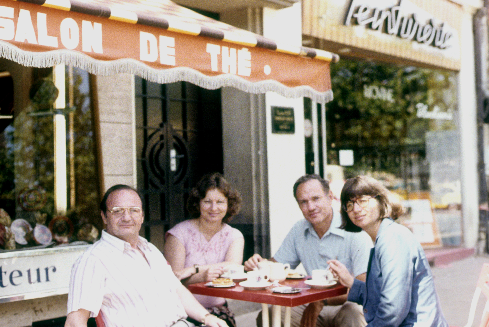
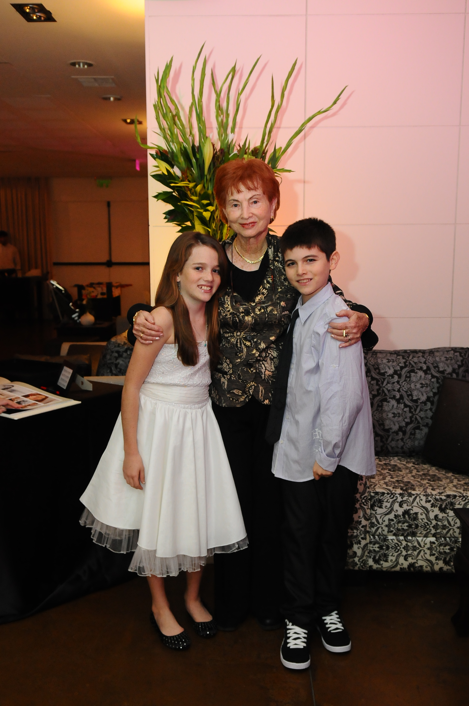
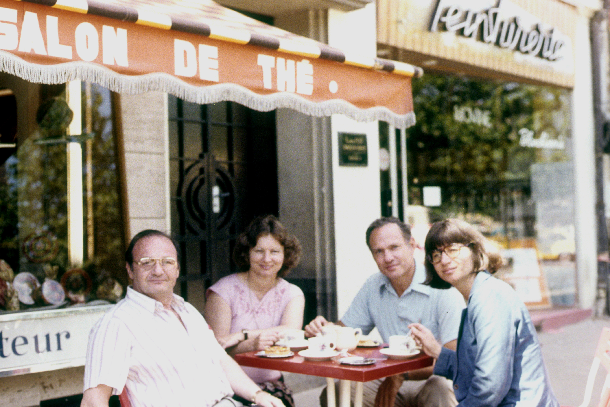
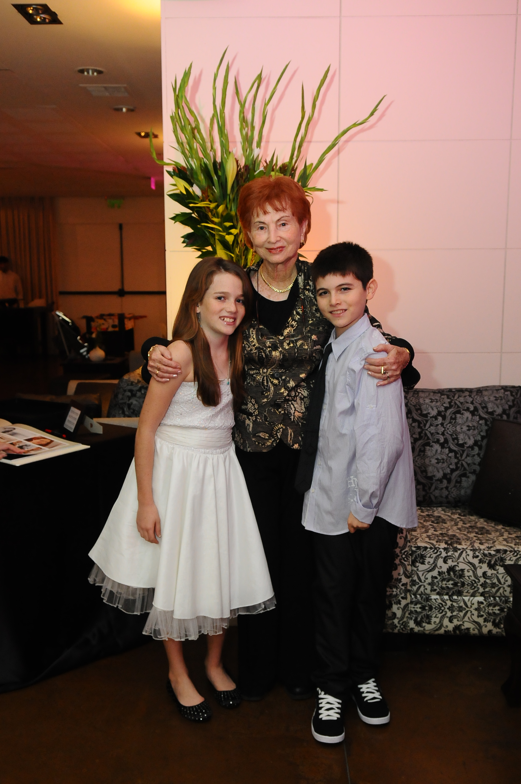

About Me
אני, רנה שר לבית שטיינמן, נולדתי ב-11/11/1935 בתל אביב.
סבי, שבהכשרתו היה קבלן, בנה בניין ברחוב חשמונאים בתל אביב. הבנייה נמשכה זמן רב ועם סיומה מרבית משפחתנו התגוררה בה. הורי, אחותי ואני גרנו בקומה הראשונה עם עוד שלוש משפחות. חלקנו כולנו שירותים משותפים ומטבח. בצד אחד בישלה אימי ובצד השני הדיירת הנוספת. במטבח תמיד הייתה תחושה של תחרות, מי מבשלת טוב יותר.
בזמן המאורעות עברנו כל המשפחה לגני עם, שאז היה כפר. מטרת המעבר הייתה להרחיק אותנו מההפגזות שהיו בתל אביב בעקבות הפרעות. חיינו בבית קטן וגם פה, גרנו עם משפחות נוספות כשבחצר הסתובבו בעלי חיים שונים. תרנגולות הטילו ביצים, ואנחנו נהנינו לאסוף אותן וכמובן לאכול אותן. למרות הצפיפות, נהנינו ושמחנו להכיר סביבת חיים שונה.
ברגע שהתאפשר לנו, חזרנו לעיר הגדולה. החיים והתנאים לא היו כמו היום. בהתחלה לא היה לנו מקרר, במקומו היה ארון מיוחד שאליו היינו מביאים בלוקים של קרח מבית החרושת שהיה צמוד לביתנו, עד שרכשנו מקרר לדירה. בהמשך עברנו לדירה גדולה יותר, בה גרנו רק אנחנו, המשפחה המצומצמת.
אני הבת הבכורה במשפחה. לאחר שלוש שנים שהייתי בת יחידה, נולדה אחותי רות המתגוררת עד היום בארצות הברית. גדלנו וחונכנו בבית דתי – מסורתי ולכן לאורך כל שנות לימודיי, למדתי בבית ספר דתי לבנות.
בשעות הפנאי בילינו במגרש המשחקים, שיחקנו מחבואים, תופסת, משחקי חבל, כדור וקלאס. בנעורי השתייכתי לתנועת הנוער "בני עקיבא" – תנועה דתית מסורתית. מטרת התנועה הייתה להפגיש את הנוער וללמדו מחנאות, יחסי חברה, שירה, ריקודים ובעיקר ציונות. הפגישות נערכו פעמיים בשבוע – ביום חול ובמוצאי שבת. התנועה חולקה לשכבות בהתאם לגילאים ולכל שכבה ניתן שם ובראשה עמד מדריך/ה שליכד את כולנו.
כשהכריזו על הקמת מדינת ישראל הייתי בת 13. זכורה לי ההתרגשות והשמחה ששררה בעיר תל אביב עם ההכרזה. יצאנו כולנו לרחובות, שרנו ורקדנו. הייתה ציפייה גדולה ביום זה. אנשים התגודדו סביב מקלטי הרדיו בניסיון לשמוע אם אכן תוקם המדינה. אני זוכרת שלפני רגע ההכרעה, כל המשפחה המורחבת התכנסה אצלנו בבית, בזכות מקלט הרדיו שהיה לנו. לקחנו דף ועליו רשמנו את ההחלטה של כל מדינה, היה המון מתח במרחב. כשהגיע רגע ההכרזה יצאנו כולנו לשדרות רוטשילד ושם הצטרפנו לאלפי האנשים שרקדו ושמחו.
בשנת 1953 סיימתי את לימודי התיכוניים והתגייסתי לצבא. שירתתי בבסיס אימונים ועם סיום האימונים שובצתי לבסיס השלישות הראשית ברמת גן כאחראית על העברת חיילים מתפקידי מטה לתפקידי שדה.
בשנת 1955 השתחררתי מהצבא והתחלתי לעבוד בבנק הפועלים כמזכירה. במשך השנים התקדמתי בדרגות ובתפקידים והגעתי עד לניהול מחלקה בבנק. בתקופה בה עבדתי בבנק הפועלים הכרתי את בעלי, אברהם שר, שעבד גם הוא בבנק הפועלים בתפקיד ניהולי.
נישאנו בשנת 1958 בתל אביב, והתחלנו את חיינו המשותפים בדירה בת שלושה חדרים ליד גימנסיה הרצליה החדשה. בדירה זו נולדה בתי הבכורה, ליאורה, ולאחר מכן, כשעברנו לדירה חדשה וגדולה יותר, נולדה בתנו השנייה, מיכל.
אהבנו מאוד לטייל עם ילדינו בכל פינה ברחבי הארץ ובעולם. כשהפכתי לסבתא לשישה נכדים, הייתי מקצה יום קבוע לכל אחת מהבנות, ובאותו היום מגיעה אליהם ומבלה עם הנכדים.
היום, כשהנכדים גדלו, אנו משתדלים להיפגש לפחות פעם בשבוע, ביום שישי לארוחה ולבלות כולם יחד.
 


